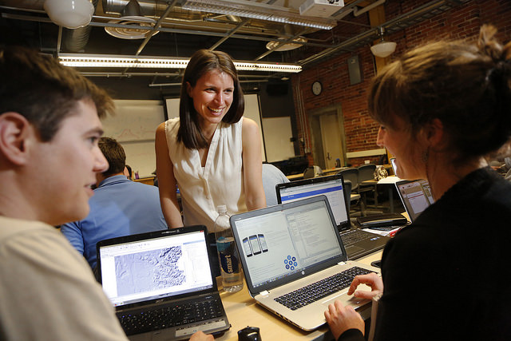

Teaching
I have been teaching topics related to Geographic Information Science since 2013. I have taught Cartography, Web GIS, Mobile GIS, Remote Sensing, Environmental Impact Assessment, and Research Methods, in three different countries, on two different continents.
See examples of my teaching materials in the form of
Utrecht University
the Netherlands
At Utrecht University, I contribute to teaching in the Bachelor’s Programme in Global Sustainability Science (GSS) and the Masters of Sustainable Development specifically in the Environmental Change and Ecosystems track. I contribute teaching specifically to the following courses at UU.
GEO3-2419 Land Change Science Undergraduate Course
GEO3-2123 Environmental Impact Assessment Undergraduate Course Coordinator
GEO2-2417 Global Integration Project Undergraduate Course
GEO1-2416 Regional Integration Project Spring Guest Lectured about Mobile data collection and Geographic Information Sciences Undergraduate Course
GEO4-2335 Environmental Change and Ecosystems (master’s course)
GEO3-2422 Bachelor’s Programme Global Sustainability Science (GSS) Undergraduate student independent thesis research projects
GEO4-2335 Masters Programme Environmental Change and Ecosystems
Thematic Interdisciplinary Challenge (TIC) Spring 2021

University of Twente
the Netherlands
ITC EnschedeFrom 2018-2019 I was the course Coordinator for the High-Tech Human Touch (HTHT) GIS Minor at the undergraduate level. I contributed teaching and course material, planning and instruction for the following courses in the Masters of Geoinformation Science and Earth Observation and Masters of Spatial Engineering: